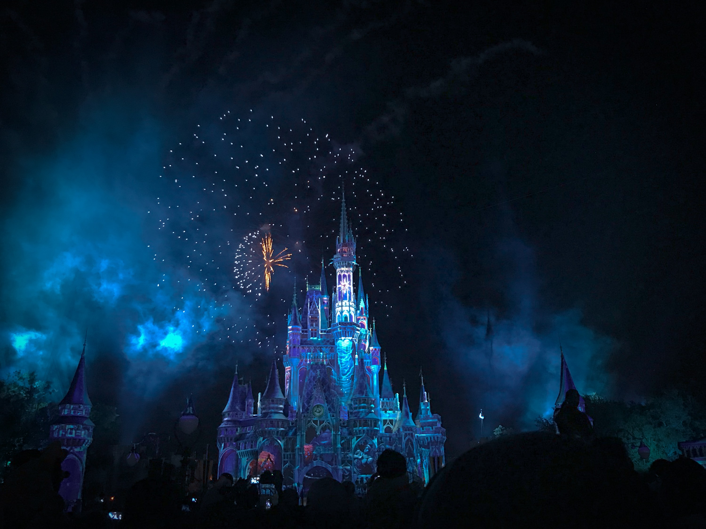

In the late 1970s up to the early 1990s, Marvel Entertainment Group (MEG) sold options to studios to produce films based on Marvel Comics characters. One of Marvel's superheroes, Spider-Man, was optioned in the late 1970s, and rights reverted to Marvel without a film having been produced within the allocated timeframe.
From 1986 to 1996, most of Marvel's major characters had been optioned, including the Fantastic Four, X-Men, Daredevil, Hulk, Silver Surfer, and Iron Man.[7] A Howard the Duck film made it to the screen in 1986, but was a box-office flop. MEG was purchased by New World Entertainment in November 1986[8] and moved to produce films based on the Marvel characters. It released The Punisher (1989) before MEG was sold to Ronald Perelman's Andrews Group. Two other films were produced: Captain America (1990) released in the United Kingdom on screens and direct to video in the United States, and The Fantastic Four (1994), not intended for release.[9]